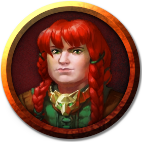

Eldeth Feldrun é uma anã do escudo bastante orgulhosa de seu povo e dos feitos do seu clã, como retomar Gauntlgrym, sua terra natal. Uma anã otimista, desafiadora e com pré-disposição a sacrifícios, está sempre acompanhada de seu Escudo. Eldeth Feldrun saiu de sua vila a procura de alguém digno o bastante para empunhar seu escudo, um artefato lendário forjado pelo mais habilidoso dos anões de Gauntlgrym. Com um otimismo extremo, continuou sua jornada mesmo após ter sido capturada pelos drows, seres que ela abomina e chama de "seres corruptos das profundezas".
Eldeth deseja retornar a Gauntlgrym, buscando ficar junto ao seu povo.
Eldeth não gosta de Sarith e acredita que sua presença é alg ruim ao grupo. Acredita que, em algum momento, ele trairá a todos. Ela não planeja fazer nada contra ele, mas deseja que o mesmo se afaste do grupo, independente da circunstância.
Eldeth gostaria de apresentar Fane Aurel ao seu povo. Ela vê nele, algo muito bom.
Eldeth planeja seguir sua jornada pessoal em busca de alguém digno o bastante para empunhar seu escudo. Uma profecia diz que o escudo possui propriedades mágicas secretas que só serão reveladas para aquele que for digno.
Mesmo que não sejam companheiros de longa data, Eldeth Feldrun ativamente se propõe a defender seus aliados de todos os perigos possíveis, mesmo que isso a coloque em eventuais problemas.
"Eu também posso morrer por você.."
"Esse coisa estranha anda olhando demais pro Fane! Eu não gosto disso! Ai dele se tocar num fiozinho de cabelo ruivo!"
"Ele é muito é do louco. Fica falando com o Ront pra lá e pra cá, como se aquele desmiolado fosse algum tipo de gênio a ser compreendido. O Ront é um bobão da tribo do Gelo, e nada pode mudar isso. Acorda, Coveshes!"
"O Fane me parece ter algum passado muito triste. Ele não é de falar muito sobre o que aconteceu, mas sinceramente.. Eu conheço um ruivo triste quando eu vejo um! Eu sei que por trás daquela barba volumosa, daquele corpo musculoso, daquele sorriso lindo e... e.. DO que que eu tava falando mesmo? Deixa pra lá, só anota aí que eu um dia vou apresentar ele pra todos de Gauntlgrym, principalmente ao rei Bruenor, e todos saberão quem é que me ajudou e me tirou das garras daqueles seres corruptos das profundezas."
"Esse aí é só mais um que despirocou aqui embaixo. De vez em quando ele quer apostar meu escudo. Até parece."
"Esse desmiolado deveria parar de caçar encrenca e entender que essa tribo dele foi extinta e ele vai ser o próximo se tocar um dedo em mim ou em alguns dos meus amigos."
"Traidor, larápio, cretino, sem vergonha, cabeça oca, ser corrupto das profundezas! Eu poderia ficar mil anos aqui falando o que acho desse desse desse.. TROÇO, que vai faltar tempo! Por mim a gente deixava ele lá em Velkynvelve pra se resolver com os amigos dele. Isso é um boi espiatório, tenho CERTEZA! Eu só não acabo com a raça dele de uma vez porque poderiam me expulsar do grupo, pois vontade eu tenho e tenho demaaaais. Tenho certeza que ele só não aprontou nada ainda porque o Fane protegeria a gente."
"Esse Miconide é mais esperto do que parece. Mas deve ser bem triste, não ter mãos pra empunhar um martelo ou um escudo"
"Esses fedorentos não prestam pra muita coisa. No máximo, revirar um lixo. São bons caçando cogumelo, mas QUEM LIGA pra cogumelos? Precisamos é de armas. Quando chegarmos em Gauntlgrym irei apresentá-los."
"Não conheço tanto ele, mas ele me parece um bom líder. Tenho certeza que ele vai gostar de conhecer o rei Bruenor."